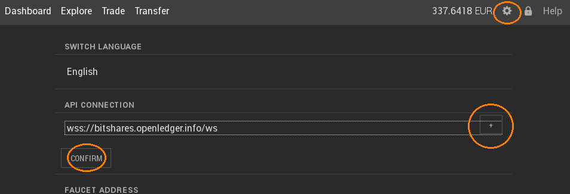

How to Run and Use a Full Node¶
In order to improve decentralization of service, every user can run his own full node (often referred to non-block-producing witness node) and we here show how to do so.
Download and Install the Witness Node¶
We first need to download, (compile) and install the witness node. All that is needed is described here:
To reduce compilation time, you can tell the compile infrastructure to only compile the witness node by running.
$ make witness_node
instead of
$ make
Running the Full Node¶
In order to run a full node that we can connect to, we need to open the RPC interface, this can be done by:
./programs/witness_node/witness_node --rpc-endpoint="0.0.0.0:8090"
This will open port 8090 and make it available over the internet (unless you run behind a router/firewall). If you want it to be open for your machine only, replace 0.0.0.0 by localhost.
Note, that the full node needs to synchronize the blockchain with the network first, which may take a few minutes.
Connecting to your own Full Node¶
In your wallet (may it be the light wallet or a hosted wallet) you can can define the full node to which is should connect to in the preferences:
{kind=link}
For your own full nodes, type:
ws://localhost:8090
and confirm.
Congratulation, you are now connected to the network via your own full node.